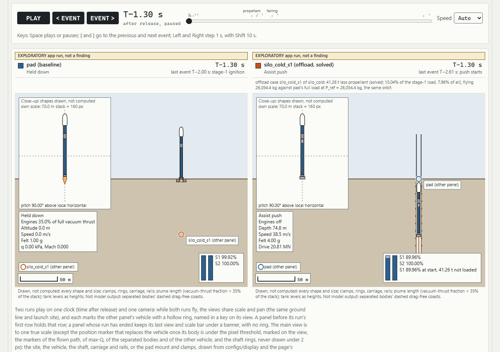

Research simulator · ground-powered launch assist
How much rocket propellant can a ground-powered push replace?
A vertical maglev silo pushes a Falcon 9-class rocket out of the ground at about 77 m/s, before or while its engines light. The simulator measures what that is worth, always against the same rocket launched from a pad.
Rahul Singh Khokhar · October 2026
The question
Keep the payload and the orbit. How much propellant can the ground replace?
At a fixed payload and the same 200 km circular orbit, what share of a Falcon 9-class rocket's propellant can an electrically powered silo push replace?
Way 1 · more payload
Same propellant, more payload
Measured in Phase 2 on the 2-D model: +1,498.8 kg for the cold-start silo (preliminary, slide 10).
Way 2 · less propellant
Same payload, less propellant
The headline question. Measured in SP1: 41.26 t of stage-1 propellant, 10.04% (preliminary, slides 13–15).
CaveatsNo structural mass for the 4 g push (~8.1 t of stage-1 strengthening cancels the gain, ~8.5 t the offload); gate vehicle +14.3% high; as pre-registered, the offload is mostly the lighter stack, not the push (slide 14).
Why a launch company might care
- A payload gain helps only on missions that need more mass to orbit. Propellant replaced at a fixed payload would apply at every launch.
- The ground energy can come from renewables and be reused every launch (the hypothesis, README).
- "Energy is cheap; power isn't": the push needs about 1.2 MWh, delivered in 2.6 s at a GW-class peak (README hand calculation).
This is motivation, not a result. Whether any operator wants the trade has not been asked or tested here.
The concepts
Three ways to start: a silo, a ramp, and the pad baseline
A · Vertical maglev silo
Rings in an underground shaft form a vertical linear motor. Engines light in the shaft (hot) or just after the exit (cold). Modelled as a prescribed-acceleration push.
B · Cable-pulled ramp
A winch pulls a carriage along a track that curves from horizontal toward vertical, and the rocket is released at the top. The original idea used a train to pull the cable.
C · Pad baseline
The same rocket from a normal pad, with its own sweep-optimized ascent in the same guidance family. Every result is a difference against C.
The hypothesis
Every metre per second from the ground should help
Any ground-supplied velocity, however small, cuts the propellant the rocket needs, or raises its payload. The ground energy can come from renewables and be reused every launch.
How it is tested
- Every run is a difference against the same rocket launched from a pad.
- Pad and variants share the vehicle, the guidance family, the sweep grid and the search budget.
- No physics feature is used in an experiment until its analytic test passes.
- Results that undercut the hypothesis are reported as plainly as the ones that support it.
What could sink it
- Extra structure for a full, fuelled stack pushed at 4 g felt.
- Speed lost while the engines light after release.
- Aerodynamic loads from starting fast, low in the atmosphere.
- Ground power: gigawatt-class peaks for a few seconds.
"The simulator's real job is to measure these penalties against the ideal numbers" (README).
First-order numbers
About 9 kg of payload per m/s, in the ideal case
| Track length | 1 g | 3 g | 5 g |
|---|---|---|---|
| 10 m | 14 m/s | 24 m/s | 31 m/s |
| 50 m | 31 m/s | 54 m/s | 70 m/s |
| 100 m | 44 m/s | 77 m/s | 99 m/s |
| 300 m | 77 m/s | 133 m/s | 172 m/s |
| 1,000 m | 140 m/s | 243 m/s | 313 m/s |
a is the net acceleration along the track; a vertical silo must also supply 1 g to hold the weight. Simulation update: the silo model reproduces √(2aL) exactly, 76.71 m/s after 2.607 s at 3 g net over 100 m (RQ3-1d).
| Assist | Payload gain | Or stage-1 propellant saved |
|---|---|---|
| 25 m/s | +220 kg (+1.0%) | — |
| 50 m/s | +440 kg (+1.9%) | — |
| 77 m/s | +690 kg (+3.0%) | 14 t (3.6%) |
| 99 m/s | +890 kg (+3.9%) | 18 t (4.6%) |
| 150 m/s | +1,360 kg (+6.0%) | — |
| 300 m/s | +2,790 kg (+12.2%) | 53 t (13.5%) |
Generic Falcon 9-class two-stage vehicle, 542.6 t (published 549 t); stage-1 dry mass 25.6 t and average Isp 295 s assumed; fairing dropped at staging. NASA's "over 20%" fuel-saving claim for ~275 m/s is a benchmark to explain, not a target. Simulation update: at 76.7 m/s the 2-D gate vehicle (+14.3% high) leaves out 41.26 t, 2.76× its own 14.98 t screening offload, before structural mass; part of the beat is the lighter stack and the pad's hold-down burn (slides 13–14).
What can eat the gain
Nine penalties the simulator has to measure
Handthe README's first-order size · Simmeasured since (preliminary, concept A, sweep-optimized, gate vehicle +14.3% high) · also in the README: train traction, sideways loads
Axial load on a full stack
HandA 3 g net push means a fuelled stack feels 4 g: 21.5 MN at the interface, 2.8× liftoff thrust.
Sim3.996 g and 22.49 MN on the 2-D stack. No structural mass charged.
Lighting after release
Handg × (delay + ramp/2): 5–25 m/s, up to a third of a 77 m/s assist.
Sim2-D costs about 2× more: 0.5 s + 2 s ramp loses 32.30 m/s on the README masses.
Hardware and strengthening
HandBreak-even at ~5.5 t added to stage 1, ~0.7 t to stage 2.
Sim~184 kg of payload per tonne of stage-1 mass, so break-even ~8.1 t; the 41.26 t offload loses 4.5–5.1 t per tonne, zero near 8.5 t.
Peak power
Hand≈2.2 GJ in 2.6 s, ~1.65 GW peak; ~1.2 MWh of electricity at 50%.
Sim2.249 GJ with a 1.725 GW peak on the heavier 2-D stack.
Aerodynamics
HandExtra speed low in dense air raises drag and possibly max-Q.
SimUnthrottled max-Q −16.0% at full load, +3.4% at the offload; drag loss −3.5 m/s; q-alpha at the kick 1.7–3.4× the pad's.
Failed ignition (A)
HandAn unlit rocket coasts ~300 m up, then falls back into the silo.
SimBack at the mouth at 76.60 m/s after 15.689 s. No abort modelled.
Silo air (A)
HandA snug shaft is a piston: up to 1.1 MN for a 3.7 m bore, ~5% of the drive.
SimEvery run vents the shaft, with no shaft drag (biases power ~0.08% low).
Carriage braking
HandAt 77 m/s, braking at 5 g needs ~60 m.
Sim60.0 m added: the 100 m stroke needs a 160 m facility.
Curves and shallow release (B)
HandR = v²/aₙ: 600 m for 1 g at 77 m/s; an unwinged release droops 5.2°/s at 45°.
SimNot modelled yet: concept B waits for README Phase 3.
Prior art
Launch assist is not a new idea
| Project | What it did | Status | Lesson |
|---|---|---|---|
| NASA Magnetic Launch Assist / MagLifter (1990s–2000s) | Horizontal maglev track about 1.5 miles long, 600 mph in 9.5 s | Technology demos only | The closest precedent; its claims are a benchmark to explain |
| EMALS, U.S. Navy | 91 m linear motor launches a 45 t aircraft to 240 km/h; four 121 MJ flywheels | Operational | Proves ~100 m, ~2.5 g, ~70 m/s at 45 t |
| Holloman maglev sled, USAF (2016) | Rocket-propelled superconducting sled, 633 mph on 2,100 ft | Test facility | Maglev works for sleds near Mach 1 |
| DARPA/NASA Horizontal Launch Study (2011) | Reviewed 130+ horizontal-launch studies spanning 60 years | Only Pegasus became operational | Many concepts close on paper; cost decides |
| NASA KSC railgun launch assist (2011) | Argued for 2–3 g for several seconds, beyond Mach 1 | Analysis, lab tests | Another drive option |
| Radian Aerospace | ~2-mile rocket sled releases a winged spaceplane at Mach 0.7, engines lit | In development; subscale tests 2024 | Wings make a shallow release workable |
| SpinLaunch | 33 m vacuum centrifuge, ~10,000 g, 10 test flights (2021–22) | No orbital system built (2025 reports) | Kinetic launch suits only g-hardened payloads |
| Long March 11, China | 58 t solid launcher cold-launched from a tube, igniting after ejection | Operational | "Eject, then ignite" works at 58 t with solids |
| Intamin Accelerator Coasters (Kingda Ka) | Hydraulic winch and cable: 0–206 km/h in 3.5 s, then a 139 m vertical tower | Kingda Ka demolished 2025 | Concept B at park scale, rollbacks included |
This project's angle is narrow: measure, on one simulator, what a push is worth to an unchanged two-stage rocket, always against the same rocket from a pad. Pad-start tools (Kerbal Space Program, OpenRocket, RocketPy) cannot ask that question.
The simulator
Phases joined by events, and every piece tested first
- Holdrestrained; engines may start
- Assist1-DOF along the track
- Releasemapped into the ascent frame
- Ignitionstep, ramp or lag
- Ascent1-D vertical or 2-D planar
- Stagingdry mass, fairing
- Insertion200 km circular
Built in Phases 0–2
- 2-D planar ascent over a spherical rotating Earth; a 1-D vertical model.
- ICAO standard atmosphere, drag varying with Mach, back-pressure.
- Vertical rise, kick, gravity turn; linear-tangent steering on stage 2.
- Payload capacity found by bisection; guidance sweep-optimized.
- Constant-acceleration silo push, with no force or power limit.
Validation first
- Rocket equation in vacuum: relative error < 1e-6.
- Elliptical orbit (e ≈ 0.3), 10 revolutions: energy and momentum drift < 1e-8.
- Equatorial east pad starts at 465.1 m/s inertial.
- Loss budget closes to < 0.01 m/s over a full ascent.
- Assist energy identity < 1e-6; 10× tighter tolerances move payload < 0.1%.
Tests and outputs
Every run writes summary.md, metrics.json, CSV time series and plots. animate makes an MP4 or GIF; replay an interactive HTML page; scene the 2-D launch scene as a page; app serves the local app with the scene (slide 18).
Calibration
The gate vehicle lands +14.3% high: a documented miss
What it meansThe miss carries into every 2-D gain. On a vehicle calibrated to 22.8 t, the cold-start silo's gain would be expected near 1.3 t instead of 1.5 t (derived by proportion, not run).
The reference orbit was fixed before the run and never moved. Nothing was tuned toward the published 22,800 kg.
The pre-registered gate vehicle (mass set C) reaches 26,054.4 kg, 974.4 kg above the ±10% band's upper edge of 25,080 kg.
Every numerical check passes. The cause is not established, because the omissions point both ways: throttling, reserves and residuals would lower the payload; better guidance could raise it.
The user accepted the miss as documented on 2026-09-30. Every 2-D number on the next slides is on the gate vehicle and inherits it.
2-D results · Phase 2
To orbit, the cold-start silo gains +1,498.8 kg (+5.75%)
| Run | Stage-1 start | Payload P* | Gain over pad | |
|---|---|---|---|---|
| pad (baseline) | lit at −2 s, 2 s ramp, held down | 26,054.4 kg | — | |
| pad_instant (unphysical yardstick) | full thrust at release | 26,137.5 kg | +83.1 kg | |
| silo_instant (unphysical yardstick) | full thrust at release | 27,880.4 kg | +1,826.0 kg | |
| silo_cold (reference) | lit 0.5 s after release, 2 s ramp | 27,553.2 kg | +1,498.8 kg | |
| silo_hot_ | lit on the carriage, full thrust at release | 27,788.2 kg | +1,733.8 kg | |
| silo_hot_full | full thrust for the whole push | 27,543.0 kg | +1,488.6 kg |
Hatched bars: unphysical yardsticks (a step to full thrust). Bars scale to the largest gain, 1,826.0 kg.
Under every ±10% sensitivity case the gain stays between +1,345 and +1,667 kg.
Best physical variant: lit on the carriage, ramp ending at release, +235.0 kg over the cold start, paid for with 2.7 t burned on the track (no sensitivity run).
CaveatsSweep-optimized guidance, not optimal control · unthrottled, so max-Q and q-alpha are upper bounds · free kick (no angle-of-attack aerodynamics) · gate vehicle +14.3% high · no structural mass for the 4 g push · prescribed-acceleration drive, massless carriage, no shaft drag · planar point mass, generic CD(Mach).
2-D results · the screening check
Twice the ideal estimate, and the loss breakdown says why
Gain against the ideal screening
1.96×, about 2.0×. The project's rule: an assist that beats the screening must be explained by the loss breakdown, or it is treated as a bug.
A vertical release is not constant-loss. In silo_cold the gravity, steering, back-pressure, drag and fairing terms together fall by 74.1 m/s, and the pad pays 14.4 m/s for burning 2.7 t while clamped. An early vertical m/s is worth about 22.7 kg of payload on this vehicle (release anchor), 2.3× the screening's 10 kg.
But small pushesgain little from the push itself. At the slow corner of the sweep (0.5 g, 50 m, 22 m/s) the trajectory term is negative (−11.1 m/s), and about 127 kg gross (about 83 kg net, 35%) of that point's +240 kg is the pad's hold-down burn, not the push.
Where the gain comes from (matched basis)
Capacity basis: 51 / 27 / 10 / 9 / 2%. Nothing is left unexplained beyond search noise.
Read withThe 34% trajectory term appears only after MECO. It is the part a better (Phase 5) pad ascent could change, and optimal control could move it in either direction. The 9% is a baseline convention, not the push.
Against the hypothesis · the payload gain (Phase 2)
What goes against it, stated as plainly
Structural mass could cancel the whole gain
Derived from the ±10% stage-1 dry-mass cases of silo_cold; a linear extrapolation beyond them, not a sized structure. No mass is charged today for the 4.0 g full-stack load (22.5 MN at the interface).
- The startup after release is expensive. The cold start gives back 327.1 kg (34.74 m/s) against an instant start, 2.37× the 1-D formula. A 3 s lag after the same 0.5 s delay gives back 781 kg.
- A full hot start does not pay. silo_hot_full ends 10.2 kg behind the cold start, and −18.5 to +0.1 kg under the ±10% cases: a tie, not a gain.
- Part of the headline is the baseline. The pad's 2.7 t clamped ramp accounts for 130.7 kg gross (83.1 kg net). Against a pad lit at release the gain is +1,415.8 kg.
- The calibration miss inflates it. On a vehicle calibrated to 22.8 t the gain would be near 1.3 t (derived by proportion, not run).
- One aerodynamic load gets worse. q-alpha at the kick is 1.7–3.4× the pad's (130–251 Pa rad at 77 m/s), with no penalty charged.
- There is no abort. After a failed ignition the full stack falls back to the shaft mouth at 76.6 m/s after 15.7 s.
- Small pushes gain little from the push itself. At 0.5 g over 50 m (22 m/s) the trajectory term is negative (−11.1 m/s), and about 83 kg net (35%) of the +240 kg is the pad's hold-down burn.
- The trajectory gain is unverified beyond the gravity-turn family: it appears only after MECO, and optimal control could move it either way (slide 11).
- The facility is sized by power. A 1.725 GW peak at release after a 2.6 s push, 2.249 GJ per launch, and 160 m of facility with the braking.
The headline question · SP1 finding
41.26 t less stage-1 propellant, before structural mass
Lines join the recorded runs. The fixed 5% and 10% cases fly their own payload capacity (+783.2 and +6.8 kg over P_ref); x* flies exactly P_ref.
- Two different vehicles, the same payload (the pad's 26,054.4 kg) to the same 200 km orbit at 28.5°. Released at 76.7 m/s, lit 0.5 s later, 2 s ramp.
- Checked: the offloaded vehicle's own payload search returns the pad's payload (+0.0085 kg); the pad's own stage-1 control removes nothing.
- ±10% sensitivity arms: 38.67–44.46 t. 2.76× the ideal-screening estimate (14.98 t); the loss breakdown explains why (next slide).
The bridge · README masses, +8.3%
Calibrated inside the band: 36.01 t, 9.10% of its 395.7 t stage-1 load. Read it as 9–10% of stage 1 across the two models, not as a Falcon 9 figure.
CaveatsGate vehicle, +14.3% high · as pre-registered, most of the offload is the lighter stack's thrust-to-weight (the paired pad is only 1.4 t short); a delta-v reading chosen after the run gives the lighter stack 28–29% (slide 14) · sweep-optimized, unthrottled, free kick · no structural mass for the 4 g push (slide 15) · max-Q 3.4% above the pad's · prescribed 3 g drive, massless carriage, vented shaft · partly filled tanks, dry masses unchanged · stage 1 is the only headline (stage 2 failed its verification).
The headline question · why 2.76× the screening
Where the 41.26 t comes from, and how much of it is the push
Ideal delta-v the offloaded vehicle does without
Both vehicles fly the pad's payload; the split closes to 4.5e-12 m/s, so the beat over the screening is explained, not a bug. The offloaded vehicle reaches MECO 12.8 s sooner and loses 1,367.2 m/s to gravity against the pad's 1,492.0.
Read withThe trajectory terms are unverified beyond the gravity-turn family: optimal control (README Phase 5) could move them either way. Fairing −0.02 m/s, margin 0.
Head start or lighter stack? The paired pad
The pad flown with the same 41.26 t offload and no push carries 24,652.4 kg, 1,402.0 kg short. The push is needed to carry the offload.
| Part · m/s, share below | Order A | Order B |
|---|---|---|
| release speed | 76.733.6% | 76.733.6% |
| head start's trajectory effects | 69.230.3% | 74.132.5% |
| pad's hold-down | 15.66.8% | 14.46.3% |
| lighter stack | 66.729.2% | 63.027.6% |
The lighter stack's own thrust-to-weight gain is 28–29%; the push and its trajectory effects 64–66%. Order A goes through the paired pad, B through the full-load silo. Derived by difference between runs.
The headline question · what can cancel it
About 8.5 t of assumed stage-1 structure cancels it
Offload left after an assumed stage-1 dry mass
| Assumed stage-1 dry mass | Offload left | % of stage 1 | max-Q vs pad |
|---|---|---|---|
| none (headline) | 41.26 t | 10.04% | +3.35% |
| +2 t | 32.29 t | 7.86% | −2.18% |
| +4 t | 22.88 t | 5.57% | −7.57% |
| +8.1 t | 1.98 t | 0.48% | −18.19% |
| ≈ 8.5 t (extrapolated) | 0 | 0 | — |
Each tonne takes 4.5–5.1 t off, and the erosion steepens; every row lies above the pre-registered linear estimate. 8.5 t is 38% of the 22.2 t stage-1 dry mass.
- Loads at the headline. Max-Q 38.4 kPa, 3.35% above the pad's: the full-load silo's 16.0% reduction is spent. q-alpha at the kick is 3.0× the pad's, and the stack feels 4.0 g on the track (20.81 MN). Unthrottled.
- Energy, not an efficiency claim. The 12.4 t of RP-1 removed carry about 128× the push's 1.16 MWh of electricity in combustion heat (5.65× at +8.1 t); the ratio leaves out LOX production, fuel supply, grid losses and the facility.
- Stage 2 is not a headline. Its case failed independent verification (31.90 t gross, a flagged lower bound).
AssumptionsThe rows add an assumed dry mass to the silo run only; they are not a sized structure. No structural model exists yet: phase SP7, the next phase, decides whether the headline survives.
Roadmap
One phase per session, each ending in something you can run
README Phase 3 · assist models
Force- and power-limited linear motor, curved ramp, cable winch, air column, modelled braking, and the structural mass for the 4 g push. This decides whether the headline survives: about 8.5 t of assumed stage-1 dry mass cancels SP1's 41.26 t (extrapolated). The structural mass and the linear motor are SP7, the next phase (SP2 closed 7 October 2026); the rest is not scheduled.
README Phase 5 · fair comparison
Optimal-control ascent for every configuration; the headline results re-run with optimized guidance instead of sweep-optimized.
README Phase 6 · hobby scale
A RocketPy 6-DOF model of a real rocket with an assist before the rail; baseline apogee within ±5% of RocketPy.
See it fly
The head start, in the first 8 seconds of the recorded run
- 1The push starts 100 m down: 3 g net, 4.0 g felt.
- 2Release at the silo mouth at 76.7 m/s.
- 3Lit 0.5 s later, 37 m up, with a 2 s ramp.
- PThe pad: lit at −2 s and held down until release.
At 8 s after release the silo stack is at 578 m and 85 m/s; the pad at 120 m and 31 m/s.
Animation examples
- SP1 fuel offload: the pad against the offloaded silo at the same payload and orbit, and the offloaded silo against its paired pad (interactive replays), and the same pair as SP2's launch scene (a page and a video in the gallery, made from the recorded directory; the app itself is on the next slide).
- Pad against cold-start silo: both flown to a 200 km orbit.
- Ignition timing: four ways to light stage 1.
- Failed ignition: the push with no engines, back at the mouth at 15.7 s.
Videos, GIFs, interactive replays and the launch scene: khoks.github.io/…/examples/
Point-mass planar model, sweep-optimized and unthrottled, gate vehicle +14.3% high, no structural mass for the 4 g push. A model replay, not a design result.
SP2 · the local app and the launch scene
Set the silo, press Launch, watch pad and silo side by side

launchsim app: a form built from the committed experiments (depth, push, ramp start, startup, offload, penalty; 17 presets), Launch, a progress card, a results panel with every caveat beside every number, a browser over the results on disk, the scene, an MP4 export.launchsim scene: the same scene as a standalone page. The vehicle's path, thrust and mass are replayed from the recorded time series; the spent stage, the fairing halves, the carriage after release and the unpowered attitude are display-only reconstructions, named on the page and on every video frame.- Every launch writes
results/app/, labelled exploratory with a banner and no plots; findings come only from committed experiment files run from a clean tree. No physics changed in SP2.
Reproduction, not evidenceThe app's launch of its silo_cold_s1 preset gives SP1's 41.26 t and the pad's 26,054.4 kg within 0.002 kg: the same configuration on the same model, so a reproduction of slide 13, not new evidence, with all of its caveats (gate vehicle +14.3% high, no structural mass for the 4 g push, sweep-optimized and unthrottled).
Read more
Where the full numbers and their caveats live
On GitHub
github.com/khoks/- README.md: the research brief, prior art, hand numbers and results so far.
- docs/findings/: one note per research question, caveats first.
- docs/phases/: the program board, SP1 to SP7; docs/demos/: the recorded demo of each closed phase.
On the site
khoks.github.io/- User manual: install, run, the app and the scene, experiment and vehicle files, outputs.
- Animation examples: replays and the launch scene of the recorded 2-D runs.
- This deck, also as a PDF.
How it is run
From the user manual (Python 3.12 and uv):
Reading is free. Any other use needs written permission (next slide).
Findings: the suggested reading order
- CAL-f9-leo-2dThe vehicle every 2-D number rests on, and its +14.3% miss.
- RQ1-fuel-offload-2dPropellant replaced at fixed payload: the headline, its decomposition and penalty rows.
- RQ3-silo-screening-2dThe payload gain, the screening check and the full caveat list.
- RQ2-ignition-timing-2dHot or cold start; what delay, ramp and lag cost.
- RQ6-aero-2d-preliminaryMax-Q, q-alpha and drag, unthrottled.
- RQ3-1d, RQ2-1dThe 1-D record: closed forms, loads, energy, failed ignition.
License
All rights reserved
Public to read. Not open source. No license is granted.
- You may view the code, documentation, findings, images, animations and slides on GitHub.
- You may not copy, modify, merge, publish, distribute, sublicense, sell or otherwise use any part of it, commercially or not, without prior written permission.
- The research ideas, including the vertical maglev silo push and the fixed-payload propellant-replacement analysis, are disclosed for reading and discussion. Publication grants no right to implement or commercialise them. Earlier launch-assist work (NASA MagLifter, EMALS, Long March 11 and others) is credited on the Prior art slide (7).
- Results are preliminary and are not engineering advice. Permission requests: through GitHub, @khoks.